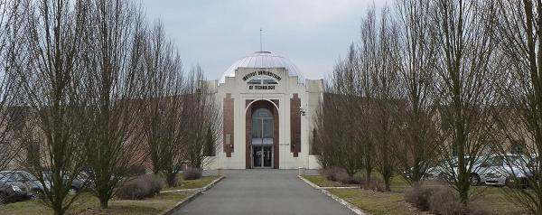
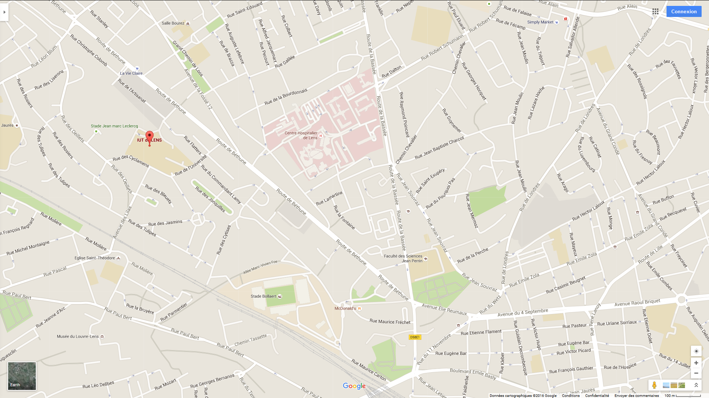

Institut Universitaire de Technologie (IUT) de Lens
En bref...
L'Institut universitaire de technologie (IUT) de Lens a été créé en 1986. Il est rattaché à l'université d'Artois depuis 1993. Celui-ci est implanté à proximité du centre ville, du stade Bollaert et du site du Louvre-Lens sur 4,5 hectares.
L’IUT accueille chaque année 1 200 étudiants dans 5 filières (mais n'en propose que 4) :
- Commerce
- Gestion
- Informatique
- Médias Numériques (MMI)
- Services pour la santé
Accès
